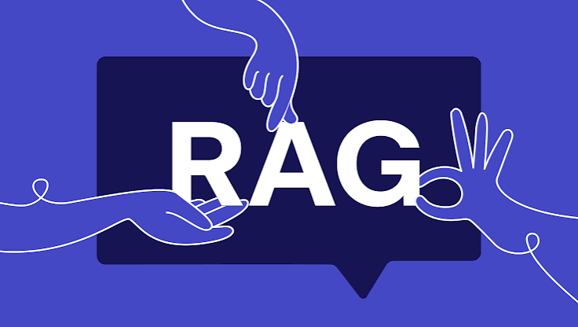
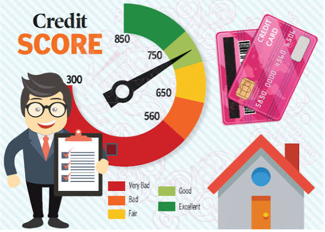
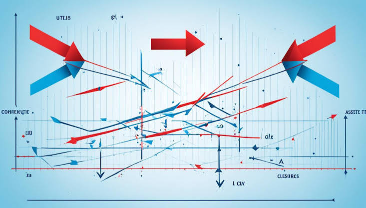

NLP & LLMs
Topic modeling, few-shot classification, RAG pipelines, and transformer fine-tuning across text-heavy, real-world datasets.
Topic modeling, few-shot classification, RAG pipelines, and transformer fine-tuning across text-heavy, real-world datasets.
Unsupervised clustering, anomaly detection, and predictive modeling with a focus on explainability and decision support.
Options pricing, cointegration-based trading strategies, and credit risk modeling with rigorous backtesting.
Cohort and RFM analysis, SQL-driven insights, and live dashboards that turn data into decisions.
End-to-end pipelines from raw, messy data to modeled insight — cleaning, feature engineering, statistical testing, and building the models that sit underneath every project here.
Unsupervised NLP pipeline on 500K+ CFPB complaints using E5 embeddings, UMAP and HDBSCAN clustering with KNN noise reclassification to surface 30+ actionable complaint themes.
Few-shot NLP pipeline classifying 2,425 deepfake incidents across 6 dimensions; built a Vulnerability Index ranking at-risk demographic groups, 51% better than zero-shot BART.
End-to-end Reddit NLP pipeline using BERTopic, fine-tuned transformers, and NLI models, processing 83K posts and 1M+ comments to quantify trigger warning effects on empathy and toxicity.
My research doesn't stop at code and dashboards — it's also making its way onto the page. Manuscripts drawing on my work in consumer complaint analysis, deepfake detection, and trigger warnings on social media are currently taking shape, moving from findings to full write-ups. This space will be updated as they're submitted and published — in the meantime, I'd be glad to discuss the work directly, so feel free to reach out.

Cross-lingual RAG system over 150 RBI regulatory circulars with citation-backed English/Hindi answers and LoRA-tuned document tagging (92.6% accuracy).

End-to-end XGBoost credit default pipeline with SMOTE and SHAP explainability, deployed via FastAPI and Streamlit; 76.9% AUC-ROC.
Black-Scholes and Monte Carlo option pricers built from scratch, with Greeks and implied volatility computed from live SPY data, tested with 60+ unit tests.
Cohort retention curves and RFM segmentation on 100K+ orders, surfacing a R$4.4M win-back opportunity via a live PostgreSQL + Streamlit dashboard.

Cointegration-based pairs-trading backtester on Indian bank stocks with strict walk-forward validation and automated daily signals via GitHub Actions.
0-to-1 PRD for an AI ticket-search copilot at Zoho Desk, with a working RAG prototype (FastAPI + FAISS) deployed live to validate retrieval quality.
A fully local, real-time voice agent — speak, transcribe, reason, and speak back — chaining faster-whisper, a local LLM via Ollama, and free edge-tts synthesis, with live latency tracking across every stage of the pipeline.
Comfortable across C++, Python and SQL, with hands-on experience managing data in MongoDB, PostgreSQL, Supabase and AWS (S3, EC2, SageMaker).
Wrangling, exploring and visualizing data with NumPy, Pandas, Matplotlib and Scikit-learn — the foundation underneath every model and dashboard I build.
Building and fine-tuning models with PyTorch, Hugging Face Transformers, XGBoost and LightGBM, alongside RAG pipelines, LoRA/PEFT fine-tuning, FAISS and sentence-transformers.
Shipping working systems with FastAPI and Docker, backed by CI/CD via GitHub Actions, monitoring with Prometheus, and deployment on Streamlit and Hugging Face Spaces.
Applying statsmodels, cointegration testing, Monte Carlo simulation and Black-Scholes to model and visualize financial and statistical problems.
{kind=link}
{kind=link}
{kind=link}
{kind=link}
{kind=link}
{kind=link}
{kind=link}
{kind=link}
{kind=link}
{kind=link}